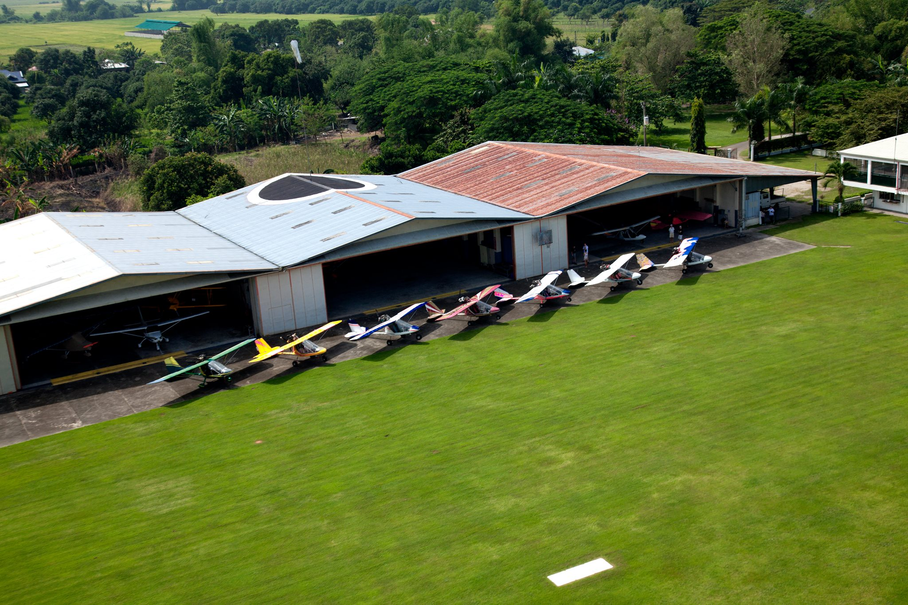
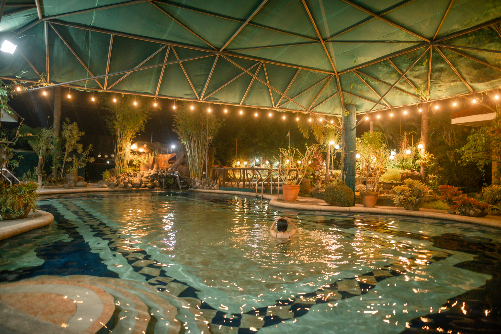
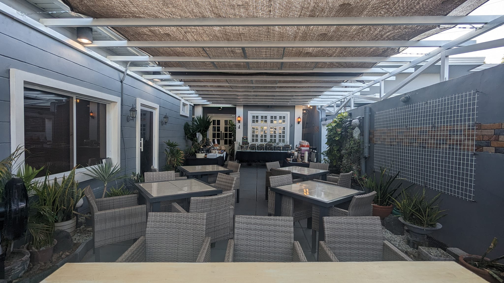
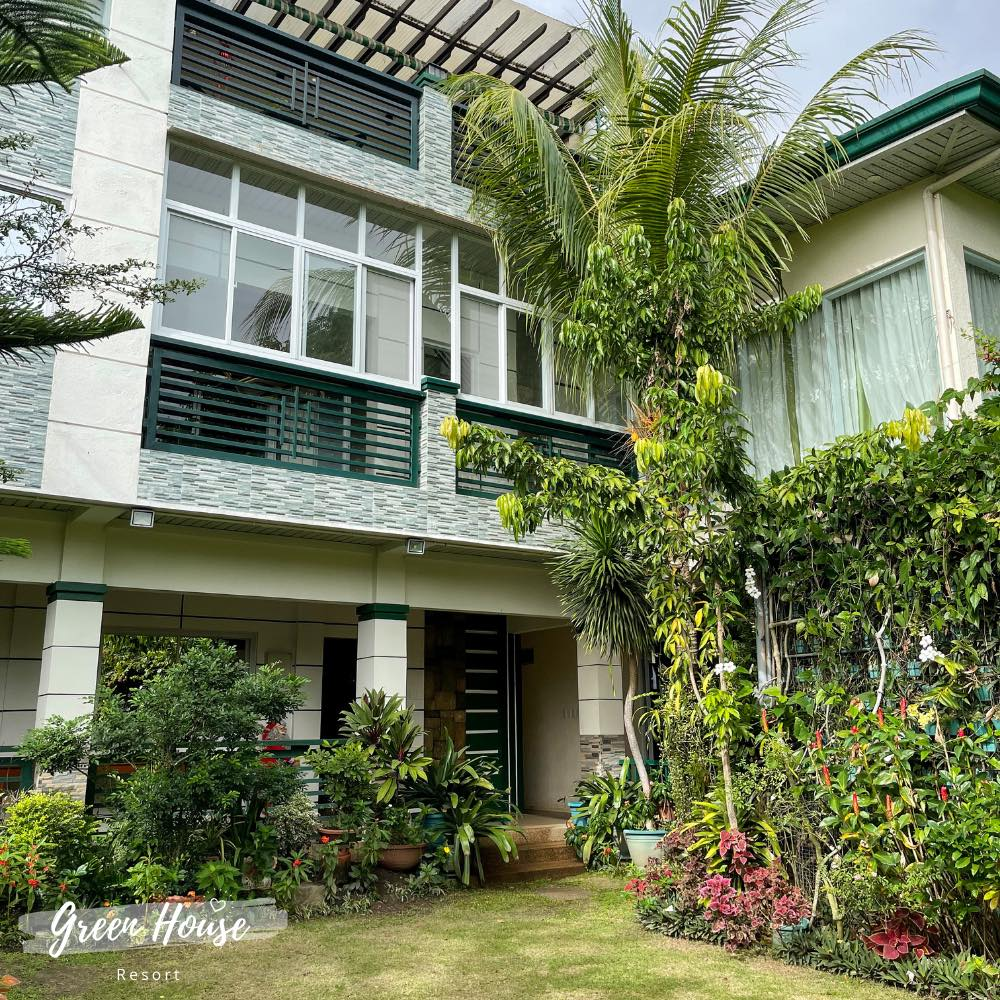
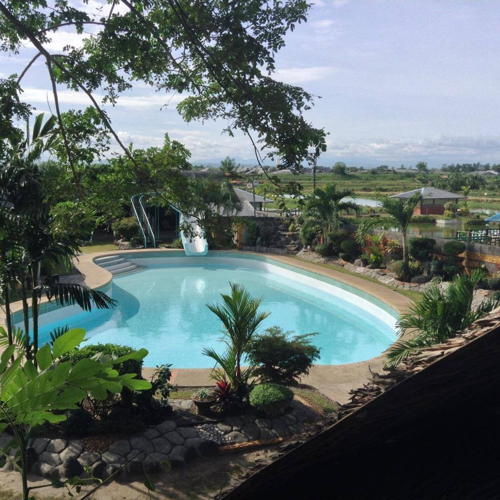
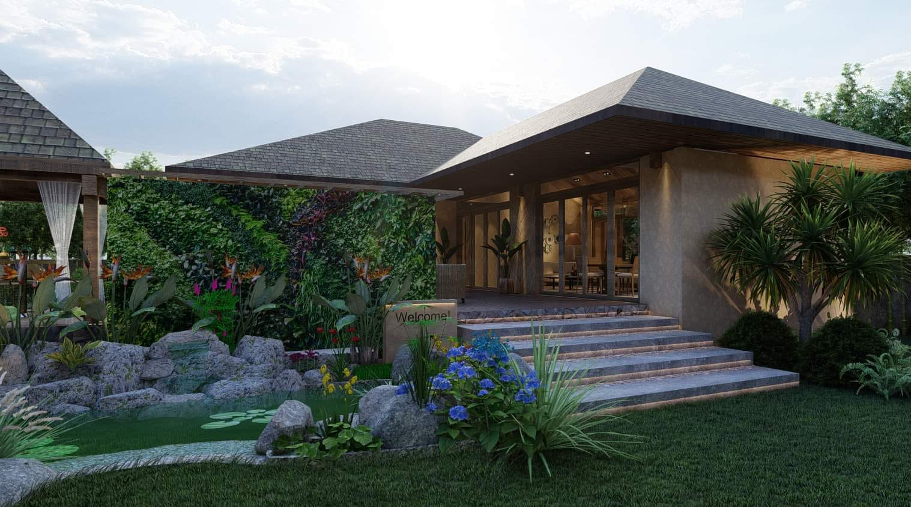

Home
Features
History
About

Angeles City Flying Club

Manabat's Farm

Bembi's Kitchen

Green House Resort

FreshWater Fishing Village&Resort

MamC's Petite Farmhouse
Book Your Dream Vacation
Contact us today to plan your perfect getaway.
Contact Us
© 2023 Tourism Hub. All rights reserved.